Panels and Canopy Installation
Parts and Materials Required
- Shock Compression Tool
- 2 mm hex key
- 2.5 mm hex key
- 3 mm hex key
Time Required
- 1 hour
Procedure
 Using a hex key, remove the 4 side screws for the front and back of the right canopy panel.
Using a hex key, remove the 4 side screws for the front and back of the right canopy panel.- Remove the 2 screws securing the right canopy front trim.
- Remove all protective tape from the right-side canopy panel. Remove the tape securing the canopy door shock.
- Place and align the right canopy panel to the 2 side brackets on the right side of the Panther system. DO NOT bend the gas spring.
- Using the four screws, secure the right panel on both sides of the brackets.
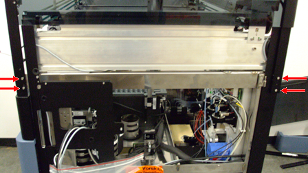
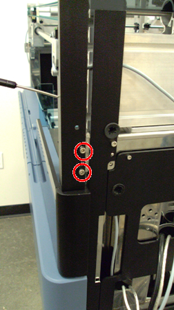
- Install the front canopy panel trim. Secure the 2 screws from inside the Panther system.
- Install the left side canopy panel, in the same manner as the right panel, using the side brackets already installed on the Panther system. Fasten the left canopy panel to the Panther system using the four screws provided.
- Carefully install the support bar between the 2 side panels by removing the four screws and inserting the bar in the slots provided on the top of the side panels.
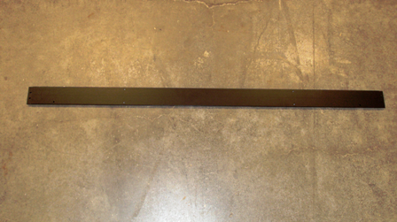
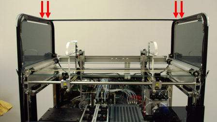

NOTE—Ensure that the locating pins are facing toward the back part of the Panther system. - Insert the two screws on each side of the bar from the top and tighten.
- Secure the 2 light fixture cables for the left and right canopy panels and connect them to the light fixtures.
- Install the back right and back left trim pieces. Insert the 2 rubber pins on the bottom and middle. Tighten 1 screw from the inside of the Panther system with a hex key.
- Using a hex key, install the 2 microswitches.

Warning—Microswitches may be damaged due to their sensitivity. Use extra caution when installing them. Apply very slight torque on the switch because excessive torque can impede movement of internal components. 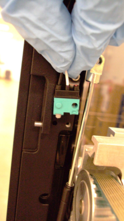

- Route the microswitch cable into the panel's groove.
- Mount the canopy doors to the front of the system using the dowel pins on the 2 side panels..
Note: Verify the air springs for the front panels are not trapped behind the panel during installation.
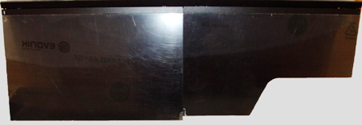
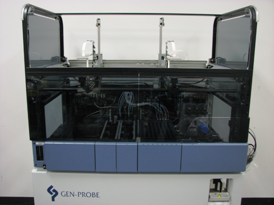
- Use the two screws provided to secure the door assembly, 1 screw on each side, from inside the Panther system.
- Install the front canopy door air springs:
- Position the air spring.
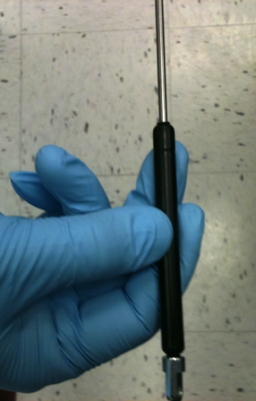
- Align the base of the air spring with the wide detent in the Shock Compression Tool.
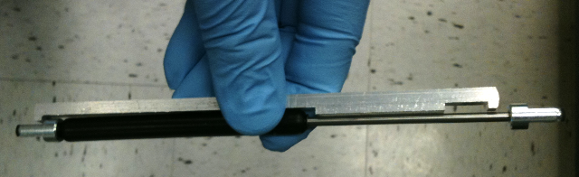
- Compress the top end of the air spring until the top cap fits into the narrow detent on the Shock Compression Tool.
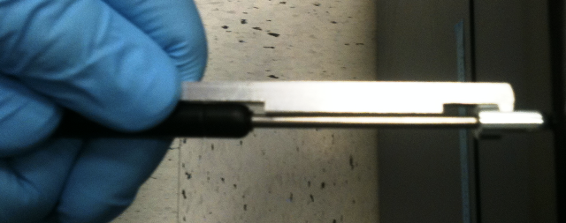
- Align the bottom of the air spring with the slot on the Panther system and fasten with the provided screw.
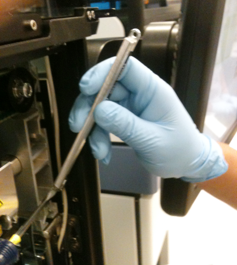
- Slightly lower the canopy door until the slots in the top of the air spring and the canopy door align.
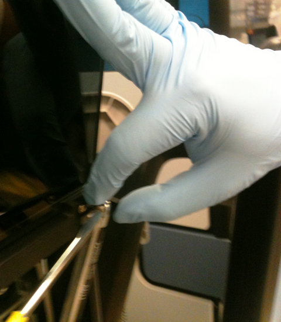
- Fasten the top of the air spring with the provided screw.
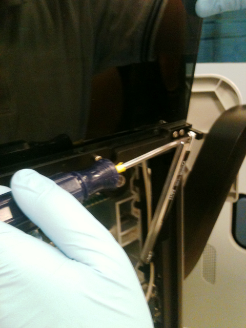
- Hold the Shock Compression Tool and carefully lower the canopy door. The tool disengages from the air spring when the spring compresses.
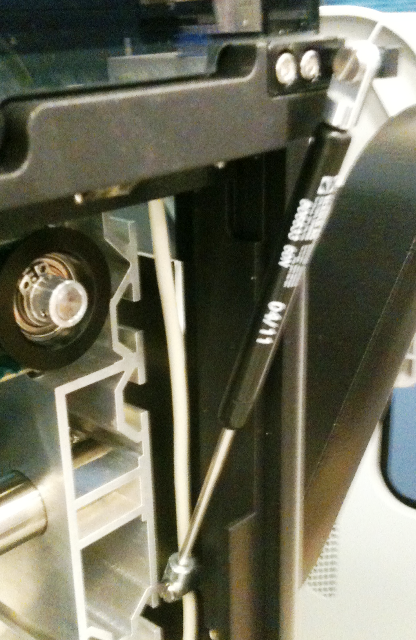
- Slide the front cover panel onto the top bracket of the door assembly and let it rest on the support bar. Install the cover using the 6 screws.
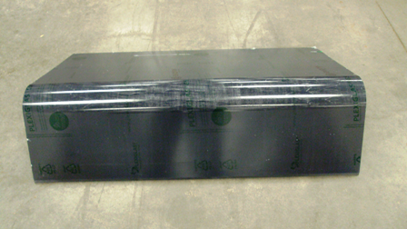
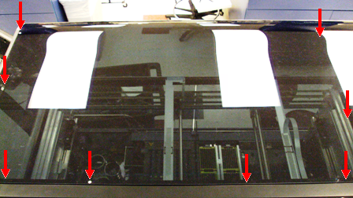
- Lay the back cover on the support bar, ensuring the two pins on the support bar line up with the two center holes on the cover, and install the back top panel cover using the provided 8 screws.
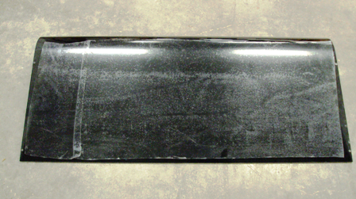
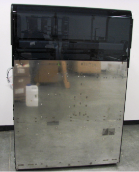
NOTE—After the installation of the canopy, verify that the Pipettor X-drive flex cables are clear, and that the Pipettor arm will not be damaged when the pipettor initially moves. - Place the left corner piece on the front side, and snap tight the 3 plastic pins into place.
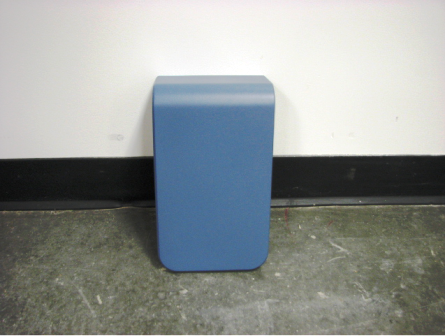
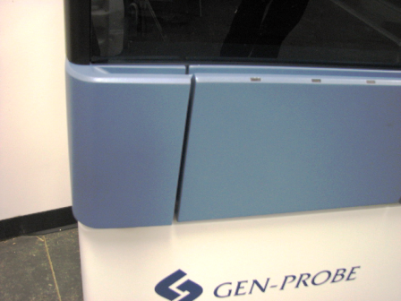


Note: The canopy door shocks come attached to the side panels.


Note: Continue to System Leveling.
 button at the top of the page to send feedback, comments, or change requests.
button at the top of the page to send feedback, comments, or change requests.